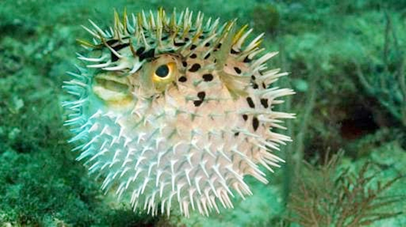

Tetraodontidae adalah sebuah famili dari ikan muara dan laut yang berasal dari ordo Tetraodontiformes. Secara morfologi, ikan-ikan serupa yang termasuk dalam famili ini serupa dengan ikan landak yang memiliki tulang belakang luas yang besar (tidak seperti tulang belakang Tetraodontidae yang lebih tipis, tersembunyi, dan dapat terlihat ketika ikan ini menggembungkan diri). Nama ilmiah ini merujuk pada empat gigi besar yang terpasang pada rahang atas dan bawah yang digunakan untuk menghancurkan cangkang krustasea dan moluska, mangsa alami mereka.
Ikan buntal secara umum dipercayai sebagai vertebrata paling beracun kedua di dunia setelah katak racun emas. Organ-organ dalam seperti hati dan kadang kulit mereka sangat beracun bagi sejumlah hewan jika dimakan, namun daging beberapa spesies ikan ini dijadikan sebagai makanan di Jepang, Korea, dan Tiongkok dan disiapkan oleh juru masak yang tahu bagian tubuh mana yang aman dimakan dan seberapa banyak kadarnya.
Tetraodontidae terdiri dari sedikitnya 121 spesies ikan buntal yang terbagi dalam 20 genera. Ikan ini banyak ragamnya di perairan tropis dan tidak umum dalam di perairan zona sedang dan tidak ada di perairan dingin. Mereka memiliki ukuran kecil hingga sedang, meski beberapa spesies memiliki panjang lebih dari 100 sentimeter (39 inchi).